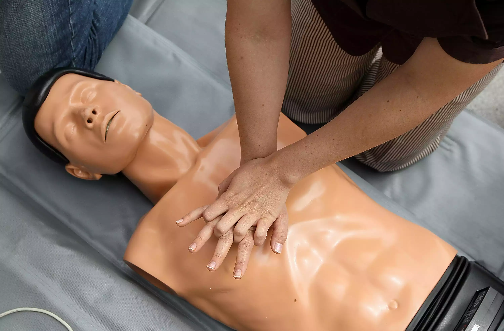

How to Do CPR
There is no substitute for learning cardiopulmonary resuscitation (CPR), but emergencies don't wait for training. The steps below include rescue breathing. Only try that if you are trained and confident with the skill. If you're hesitant or if you've never been trained in CPR, use hands-only CPR.

Before You Do CPR
Determine if the patient needs CPR before you start it. Follow these steps:
- Shake and Shout. Grasp the patient by the shoulders and shake briskly. Shout "Wake up!" and the patient's name if you know it. Shake and shout for a few seconds, but don't spend too much time.Grasp the patient by the shoulders and shake briskly. Shout "Wake up!" and the patient's name if you know it. Shake and shout for a few seconds, but don't spend too much time.
- Call 911. Anytime a patient won't wake up, call 911 immediately. Get help on the way as fast as you can.
- Check for Breathing. Tilt the patient's head back and look for breathing. If the patient doesn't take a breath in less than 10 seconds, start CPR.Don't spend a lot of time trying to wake the patient. If it doesn't work with five seconds of trying, move on. You can't hurt the patient with CPR, but if the patient needs CPR and you don't do it, the patient will die.
Don't spend a lot of time trying to wake the patient. If it doesn't work with five seconds of trying, move on. You can't hurt the patient with CPR, but if the patient needs CPR and you don't do it, the patient will die.
Start CPR
- Push on the Chest. Imagine a line between the nipples and put your hands on the center of the chest right below that line. Push hard and fast—about twice per second.
- Rescue Breaths. If you have had CPR training and feel comfortable performing the steps, push on the chest 30 times then give 2 rescue breaths. Repeat cycles of 30 chest compressions and 2 breaths until help arrives or the patient wakes up.
If you have not had CPR training or don't feel comfortable giving rescue breaths, just keep pushing on the chest until help arrives.
What Each Step Does
If you have a patient in front of you and you're saving a life, ignore this section until later. If, on the other hand, you'd like to know why you do each step, read on.
Shaking and Shouting
The idea is to try the least invasive treatment for the patient before moving on to something more aggressive. Shaking and shouting went out of favor for a while due to concern about neck injuries. The reality is that neck injuries are both very uncommon and very unlikely to be aggravated by this maneuver.
Try a quick shake and shout, but don't let this step get in the way of the more important steps. If the patient isn't responding, call 911. If the patient wakes up, but is confused or not able to speak, call 911.
Calling 911
Whenever you have an unconscious adult patient, the ambulance is the first thing you want on the way. Even before starting CPR, you need to call 911 and get help started your way. Without an ambulance to get the patient and transport him to the right hospital, None of the stuff on this list will help much.
Follow the instructions given by the dispatcher on the other end of the phone (if they do give you instructions). If they don't provide instructions, follow the steps listed above.
Chest Compressions
Compressing the chest moves blood through the brain, keeping it alive until the heart can get started again. It's really important to keep the blood flowing without interruption. Any delay in pushing on the chest (or any pause of more than a few seconds) also significantly affects how well blood flows.
Almost as important as how deep and how fast you compress the chest, releasing the chest after each push is also critical. Your hands shouldn't bounce, but you should lift your entire body weight off the patient in between each compression.
Chest compressions are extremely important. If you are not comfortable giving rescue breaths, still perform chest compressions! It's called Hands Only CPR. No matter what, keep going until help arrives or the patient wakes up and tells you to stop.
Rescue Breathing
Rescue breathing has become one of the most controversial steps in CPR. The debate is ongoing about how much is enough (or too much) and whether it's even necessary.
If you do perform rescue breaths, make sure you know how to do it right.
Get Trained
This is not a substitute for actual CPR training. Find a CPR class and get proper training.
Not every CPR class is the same. There are CPR classes for healthcare professionals as well as CPR classes for the layperson. Before you take a CPR class, make sure the class is right for you.